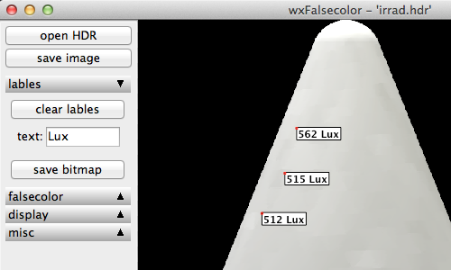

A wxPython GUI for the Radiance falsecolor2 tool
This project is maintained by tbleicher
The script can take an image as a command line argument, so you can use it like ximage.
wxfalsecolor image.hdr
The application window will start in a default size. There is no need to resize a particularly large image that wouldn't fit on the screen.
The control panel on the left side shows all the available action and option buttons. It's has three static buttons (open, save and quit at the bottom) and alternately visible folding panels dedicated to a particular task.
To open a new image press the open HDR button and browse for the image or just drag the image in the right picture panel.
The images will be converted to a temporary LDR image file and this image will be displayed in the window. Large images will be scaled to fit in the frame so you can always see the full content on the image. Resize the frame to fit the proportions of the image and rescale the image to match your screen. The rescaling only happens in 10% increments and the image will not be enlarged to fill the frame. You can see the currently applied scale factor in the bottom right corner below the image.
Once the image is loaded you can use the tools in the lables, falsecolor and display sections to annotate and modify the original HDR image. Note that all changes are applied to temporary files so your original image will not be modified. You can save the modified image as BMP, PPM, TIF or HDR image to preserve the changes and filters that you have applied.
The save image button will save the HDR image that is
produced by the falsecolor2 and pcond tools to a
permanent image on your hard drive. If you choose an LDR format it will be
converted to another format on the fly but the size will be based on the
size of the input HDR image, not the size of the image currently displayed
on the screen. I. e. an image that was originally 3000px wide and displayed
in a 800px wide window will be saved with the original 3000px of the HDR
image.
A comment on file names and image formats: On Windows the format will be determined by the extension of the new image name while on OS X the appropriate extension is appended to the filename. So if you name your new file image.jpg and select BMP as file format you will get a BMP called image.bmp on Windows and a BMP called image.jpg.bmp on OS X and Linux.
Under the lables foldout panel you can find the
load data button.
If you want to show pixel values as labels on the screen you have to
click this button first to load the pixel data into memory. This can
take a while, especially for large images. After that the button will
be relabeled to "clear labels" and you can use it to remove all the
labels you have placed on the screen so far.
Placing labels: Once the data is loaded you can click on a point in the image and a label with the corresponding luminance value will be displayed overlayed on top of the image. The luminance is calculated using the formula
L=179*(0.265*r+0.67*g+0.065*bWhich gives you a correct value in Lux if the image was calculated with the
-i option of rpict. You can set the text
that is displayed in front of the value in the text box. You can also
click-and-drag to describe a rectangular area on the image for which the
average value will be displayed. Note that pixels which are completely
black (red == 0) will not be counted in the average so a black background
will not influence the results of the average calculation.
The save bitmap button allows you to save a copy of image to an LDR image as displayed on the screen. This means that the image will be of the size as in the window on the screen and it will show all the labels you have currently displayed.

Once you have opened an image you can set options for the
falsecolor2 conversion.
When you press convert
(or update fc after that) the
image will converted and the result displayed.
Unter the display foldout you can find options for the
pcond radiance tool to apply to the HDR image. Once you have
Unter the misc foldout you can find a button to show the header of the Radiance image. If you have modified the HDR image the new header of the new image will be shown, too. Here you can find for example the new exposure value of the image.
The check update button makes an online check at the Github code repository to see if a new version of the Windows executable is available. You will be prompted to download the new executeable if one found. If you are using the Python source on Max OS X or Linus you can check for a new package on the same page at Github.
The about button displays information of the application itself, which includes also the version number.